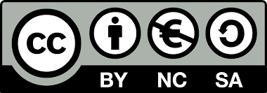

Kotisivujen tärkein sivu on etusivu, jonka nimenä on aina index.html. Sen kautta kuljetaan muille sivuston sivuille. Kotisivuilla ei välttämättä tarvitse olla edes muita sivuja kuin etusivu. Etusivu on kuitenkin lähes pakollinen, sillä ellei etusivua ole, vierailijat joutuvat kotisivujen osoitteesta kansiovalikkoon eivätkä nettisivuille. Siksi on tärkeää huolehtia, että kotisivuille on luotu index.html -etusivu.
Etusivun luominen aloitetaan määrittelemällä mitä html:n versiota käytetään sekä kertomalla selaimelle tarvittavat kieli- ja merkistöasetukset (etenkin suomalaisilla sivuilla tärkeää, jotta ääkköset näkyvät oikein). Tämän jälkeen voidaan koodata muu etusivun sisältö. Katso esim. tämän sivun lähdekoodia ja yritä luoda itsellesi oma etusivu sen avulla. Apuna voi käyttää myös W3Schoolsin html-tutoriaalia.

Maria Öhman, 2015